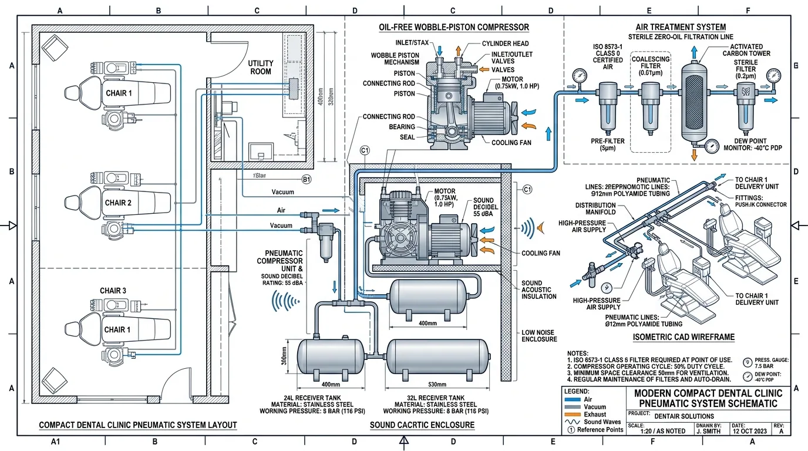
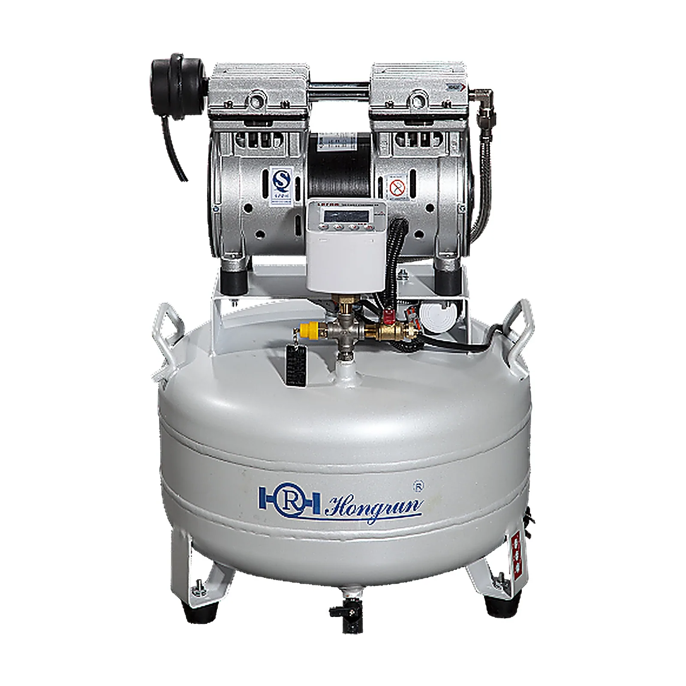
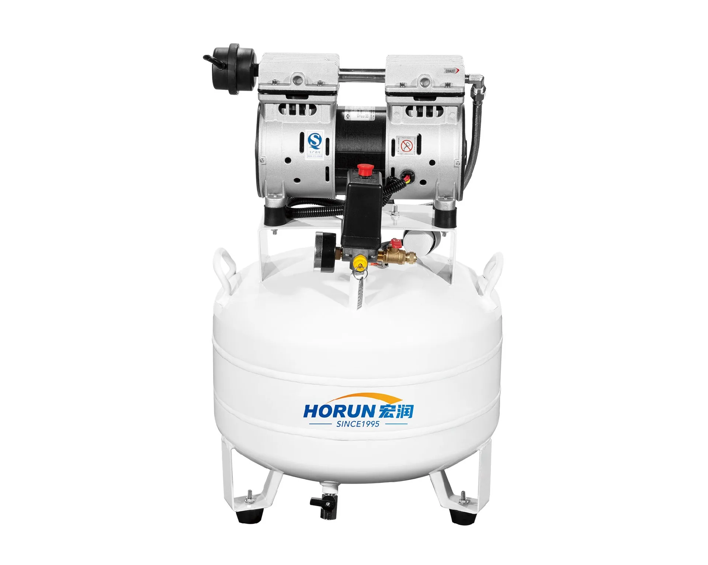

Compact 1–3 Dental Chair Operatory Pneumatic Flow, Under-Counter Ventilation and Installed Acoustic Review, and Receiver Tank Sizing
Executive Engineering Summary & Commercial Takeaways
- Preliminary Flow Planning: Using Q = chairs × 50 L/min × k with the default project assumption k = 0.70 gives 35 L/min for 1 chair, 70 L/min for 2 chairs and 105 L/min for 3 chairs. Confirm instrument demand, reference pressure and simultaneous use; this is not an ISO or NFPA rule.
- Low-Profile Receiver Form Factor: HY-100 uses a 24L horizontal receiver; HY-200 uses a 38L standard receiver, with 24L/32L OEM-confirmed custom options. Verify the selected configuration's dimensions, service clearances and cabinet ventilation before installation.
- 38L vs. 24L Buffer Capacity: A 38L receiver holds 58.3% more nominal air than a 24L receiver at the same pressure. Cycling frequency and component life still depend on actual demand, pressure band, controls, ventilation and maintenance; no fixed starts-per-hour or life extension is guaranteed.
- Installed Acoustic Review: Catalogue sound-pressure values apply only under stated model and test conditions. Cabinet reverberation, room finishes, mounting and operating load affect the sound heard at the chair; assess the complete installation against the project's acoustic criterion.
Picture this: You are halfway through a critical crown preparation or implant placement. Suddenly, your high-speed turbine bogs down as available pressure falls. The compressor cycles repeatedly in a poorly ventilated cabinet, while a generic hardware-store unit adds avoidable noise and uncertainty about air quality. Moisture at a syringe can also disrupt treatment and requires investigation of the complete air system.
How should a small clinic avoid the nominal-wattage trap? Start with documented instrument demand and operating pressure, compare complete-system configurations, and verify ventilation, receiver capacity and maintenance requirements. This guide uses a preliminary planning basis rather than claiming a universal failure rate or a guaranteed installation outcome.
1. The Small Dental Practice Dilemma: Spatial Footprint, Acoustics, and Flow Demands
In private boutique dental practices, urban dental clinics, orthodontics suites, and specialized endodontic offices with 1 to 3 dental treatment chairs, space optimization and acoustic comfort represent primary architectural challenges. Unlike large hospital dental departments that possess dedicated basement pneumatic plant rooms, compact clinics frequently lack remote mechanical utility spaces.
Consequently, the medical air compressor may need to reside directly inside the treatment room, adjacent to the sterilization nook, or within standard operatory under-counter cabinetry. This spatial constraint creates four project checks for the selected unit and its complete installation:
Low-Profile Height
Match the exact unit and receiver dimensions to the cabinet envelope while retaining the manufacturer's service and ventilation clearances.
Installed Acoustic Review
Compare model-specific test data with the project's room criterion. Cabinet reverberation, mounting and operating conditions can change the sound level at the chair.
Oil-Free Design & Verified Quality
Oil-free piston design is not a sterility claim. Total-oil Class 0 evidence must be model-specific; TÜV AK 50528335 0001 / CN21HFR2 001 covers complete HW-200–HW-3600 scroll units only, not HY.
Thermal & Cycle Review
Receiver volume can moderate cycling for a given demand and pressure band, but cannot guarantee a start rate or prevent overheating. Verify controls, ventilation and the model's operating limits.
2. Preliminary Dental Air Planning: Demand Before Watts
A frequent error is sizing a compressor solely by motor power (for example, assuming "0.75 kW is always enough for 2 chairs"). Selection must start with the instrument list, operating pressure and plausible simultaneous use, then compare documented compressor delivery and the complete installation:
Table 1.0: Preliminary Planning Flow and Candidate Models for 1–3 Chairs
| Planning Case | Chairs (N) | Project Assumption (k) | Preliminary Q (L/min) | Candidate for Verification | Receiver Configuration |
|---|---|---|---|---|---|
| Single-Chair Planning Case | 1 | 0.70 | 1 × 50 × 0.70 = 35 L/min | HY-100 candidate | 24L horizontal; verify exact dimensions |
| Two-Chair Planning Case | 2 | 0.70 | 2 × 50 × 0.70 = 70 L/min | HY-200 candidate | 38L standard; 24L/32L OEM-confirmed custom |
| Three-Chair Planning Case | 3 | 0.70 | 3 × 50 × 0.70 = 105 L/min | HY-300 candidate | 50L configuration; verify installation envelope |
3. Product Deep-Dive: HY-100 (24L) vs. HY-200 (38L) Engineering Comparison
For small-clinic planning, compare the HY-100 with its 24L horizontal receiver against the HY-200 with its 38L standard receiver. The HY-200 can also be supplied with OEM-confirmed custom 24L or 32L receivers. Both product families require review of the selected pump configuration, documented delivery, receiver, controls and installation; catalogue values alone do not establish installed performance:

Solo Chair BenchmarkHongrun HY-100 (0.55 kW / 0.75 HP)
24L Low-Profile Horizontal Receiver · Compact Wobble Piston
- Displacement / Flow Rate: 100 L/min (official catalogue air delivery)
- Receiver Volume: 24 Liters (Horizontal Low-Profile)
- Catalogue Acoustic Data: ≤ 55 dB(A); verify stated test conditions
- Physical Dimensions (L × W × H): Confirm current model drawing and receiver option
- Net Weight / Portability: 22.5 kg (Integrated Handle)

Dual-Chair Standard BenchmarkHongrun HY-200 (0.75 kW / 1.0 HP)
38L Standard Receiver · 24L/32L OEM-Confirmed Custom Options
- Displacement / Flow Rate: 150 L/min (official catalogue air delivery)
- Receiver Volume: 38L standard (+58.3% vs. 24L)
- Catalogue Acoustic Data: ≤ 58 dB(A); verify stated test conditions
- Physical Dimensions (L × W × H): Confirm current model drawing and receiver option
- Net Weight: 26.5 kg (official catalogue)
4. Receiver Storage: Comparing 38L and 24L Without Cycle-Rate Guarantees
A receiver stores air between compressor starts and can moderate pressure fluctuation for a given demand and control band. It is not, by itself, a dryer, sterilizer or guarantee against overheating. The standard HY-200 receiver is 38L; 24L and 32L are OEM-confirmed custom options. At the same pressure, 38L provides 58.3% more nominal storage than 24L:
5. Spatial Layout: Under-Counter Cabinet Installation
Size intake and exhaust openings from the selected model's heat rejection and the site HVAC design. Prevent recirculation and verify cabinet ambient temperature under the project's maximum load.
Follow the current installation drawing for receiver, fan and service clearances; do not substitute generic dimensions for model-specific requirements.
Confirm the supplied drain connection and route condensate through an approved air gap or trap in accordance with local plumbing requirements and the equipment manual.
6. Commercial B2B Sales Playbook & Objection Handling Guide
Q1 "Why shouldn't I just buy a cheap commercial oil-free air compressor from a local hardware store for my clinic?"
Engineering Answer: A generic hardware-store compressor is not automatically unsuitable, but its dental suitability cannot be assumed. Verify documented air quality at the required pressure, receiver corrosion protection and drainage, controls, ventilation, service support and installed acoustics. Speed, noise, seal life and internal corrosion vary by product and operating conditions; no fixed failure time or clinical outcome can be inferred from the purchase channel alone.
Commercial Selling Point: Hongrun HY Series compressors use oil-free piston designs and self-lubricating PTFE rings. Receiver drainage, inspection and corrosion protection follow the model manual and site conditions; antimicrobial performance is not assumed. Request model-specific air-quality documentation; the TÜV Class 0 certificate covers complete HW scroll units only.
Q2 "I have 2 dental chairs now, but I might add a 3rd chair in 2 years. Should I buy HY-200 (38L) or HY-300 (50L)?"
Engineering Answer: The preliminary three-chair planning load is 3 × 50 × 0.70 = 105 L/min. That allowance does not prove simultaneous capacity for every procedure. Document the instruments, reference pressure and credible peak demand before deciding whether HY-200, HY-300 or another configuration is suitable; use a verified higher load if the project demands it.
Commercial Recommendation: Compare the HY-200 with 38L standard receiver and the HY-300 with its documented receiver configuration against the project demand, expansion plan, cabinet envelope and service clearances. Do not select solely by future chair count or nominal motor power.
Q3 "What routine maintenance does the HY-100 / HY-200 require?"
Maintenance Checklist:
- Drainage: Follow the supplied drain configuration and model manual; inspect condensate removal and record abnormal carryover.
- Intake: Inspect and service the intake filter at the interval specified for the model, environment and usage.
- Filter replacement: Use only the documented element and replacement interval; HEPA designation, where applicable, describes particle filtration and is not an antimicrobial guarantee.
- Lubrication: Oil-free compression avoids routine compressor oil changes, but does not eliminate receiver drainage, inspection, corrosion protection or other maintenance.
小门诊、大讲究：1~3台牙椅气源如何精准避坑？
（24L矮罐 vs 38L静音机选型指南）
小型口腔诊所的气源空间、声学与用气矛盾
在以 1 至 3 台牙科综合治疗台 为主的小型独立门诊、高端私人诊室、正畸专科室或社区口腔中心中，用气环境与拥有独立动力设备间的大型医院存在本质不同。由于场地有限，空压机可能需要安置在诊疗室附近、清洗消毒间一角或操作台地柜内；具体位置必须同时满足设备、通风、噪声与维护要求。
这种空间条件要求对所选整机及安装系统进行四项工程核验：
低矮卧式罐身与安装核验
按所选型号与储气罐配置核对整机尺寸、地柜净空、搬移路径及检修空间，不以统一的通用高度替代产品安装图。
安装后声学评估
图册声压数据仅适用于其规定的型号与测试条件。地柜混响、安装方式、房间饰面及运行负荷会改变牙椅位置的实际听感，应按项目声学要求评估。
无油设计与分属性空气质量
无油压缩设计不等于无菌或微生物控制。总油、颗粒物与水／压力露点应分别核验；TÜV AK 50528335 0001／CN21HFR2 001 的总油 Class 0 证据仅覆盖完整 HW-200 至 HW-3600 涡旋机组，不覆盖 HY 活塞系列。
储气缓冲与启停核验
储气罐可缓冲一定需求与压差下的压力波动，但不能单独保证启停次数、防止过热或确定部件寿命。应结合需求、控制策略、通风和厂家限值计算并验证。
1~3 台牙椅临床用气量初步计算
不能只按电机功率判断“0.75kW 是否够用”。应先列出器械、工作压力和可能同时使用的工况，再对照目标机型的有效排气量与完整安装条件：
按默认系数，1/2/3 椅的初步负荷分别为 50/70/105 L/min。候选型号仍须按实际配置核实：
| 规划工况 | 牙椅数 | 项目假设 (k) | 初步 Q (L/min) | 待核实候选型号 | 储气罐配置 |
|---|---|---|---|---|---|
| 单椅规划工况 | 1 | 0.70 | 1 × 50 × 0.70 = 50 L/min | HY-100 候选 | 24L 卧式；核实具体尺寸 |
| 双椅规划工况 | 2 | 0.70 | 2 × 50 × 0.70 = 70 L/min | HY-200 候选 | 标准 38L；24L/32L 仅 OEM 确认定制 |
| 三椅规划工况 | 3 | 0.70 | 3 × 50 × 0.70 = 105 L/min | HY-300 候选 | 50L 配置；核实安装空间 |
HY-100 (24L) 与 HY-200 (38L) 分型号资料对比
对于 1~2 台牙椅的门诊，可比较 HY-100（24L 卧式储气罐） 与 HY-200（38L 标准卧式储气罐）。HY-200 的 24L、32L 为需 OEM 确认的定制选项。应按所选泵头、储气罐、控制与安装条件核对有效排气量、缓冲、通风及声学，而非将图册参数直接等同于现场性能：
HY-100（0.55 kW · 24L 卧式矮罐）
24L 低矮卧式配置 · 便携与地柜安装前核实附件及空间
- 理论排气量： 100 L/min (图册额定排气量)
- 储气罐容积： 24 升 卧式圆柱矮罐
- 图册声学数据： ≤ 55 dB(A)；核实规定测试条件
- 外形尺寸 (长×宽×高)： 按当前型号图及储气罐配置核实
- 整机净重： 22.5 kg
HY-200（0.75 kW · 38L 升级卧式罐）
官方升级 38L 储气罐 (+58.3% 名义缓冲容积) · 强化 ZB200 机头
- 理论排气量： 150 L/min (图册额定排气量)
- 储气罐容积： 38 升 官方图册储气罐
- 运行噪音： 按型号与测试条件确认
- 外形尺寸 (长×宽×高)： 按所选型号图纸与储气罐配置确认
- 整机净重： 26.5 kg
为什么 2 台牙椅强烈推荐 38L 卧式储气罐？
宏润 HY-200 的标配储气罐为 38L；24L 与 32L 为 OEM 确认的定制选项。同压力下 38L 比 24L 的名义储气容积多 58.3%。储气容积会影响循环与压力波动，但实际启停频次须按用气量、压力带、电机与控制系统核算。
当 2 台牙椅同时工作时，如果仅配备 24L 小储气罐，空压机每 2~3 分钟就必须启停一次，一小时启停高达 22 ～ 28 次。这种频繁启停会带来三大致命隐患：
电机启动瞬时电流高达额定电流的 4~5 倍，极易引起定子绕组过热跳闸，启动电容加速老化失效。
气体在罐内滞留冷却时间不足，高温湿热空气直接进入牙椅气路，导致手机气管内壁积水并喷水。
在背压未完全释放时频繁启动，特氟龙皮碗承受剧烈剪切力，使用寿命从 2.5 万小时锐减至数千小时。
而升级为 38L 储气罐 后，在双椅高频工况下，每小时启停次数被严密压制在 ≤ 12 次/小时 黄金安全区间，既保证了气压平稳输出，又大幅延长了电机与活塞密封系统的综合寿命。
地柜嵌入式安装与声学散热实操要点
将 HY-100 或 HY-200 嵌入安装于医疗地柜内部时，请务必监督装修施工方落实以下三项工程规范：
-
形成对流通风道： 地柜底部必须开凿不小于 150 cm² 的进风百叶窗，柜体上方或侧面设置排风口，确保柜内环境温度不超过 40°C。
-
预留安全散热间隙： 空压机储气罐四周应保留 ≥ 50 mm 间距，风扇罩后方保留 ≥ 80 mm 进气间隙，严禁杂物堆压阻挡进气。
-
自动排水管引出： 标配的 6mm 尼龙排水管应直接引出地柜接入地漏或下水管，免除人工频繁弯腰倒水的维护负担。
业务销售与客户答疑实战指南（避坑话术宝典）
“门诊刚开业预算紧张，去五金机电城买一台几百块钱的无油工业空压机行不行？”
技术底牌： 工业级无油机多为 2800 转超高速电机，噪音高达 75~82 分贝，放在诊室内如同拖拉机，患者根本无法接受；更严重的是，工业机储气罐内壁没有医用防腐防锈涂层，使用 3 个月就会产生大量铁锈粉末，直接卡死并报废单支上千元的牙科手机陶瓷轴承。
销售成交话术： “宏润 HY 系列采用无油活塞设计，在公司二类医疗器械注册证 (NMPA Class II) 许可范围内供货，可提供分型号空压与空气质量检测资料。TÜV ISO 8573-1 Class 0 证书只覆盖完整 HW-200 至 HW-3600 涡旋机组，不覆盖 HY 活塞系列。圣戈班自润滑 PTFE 环支持无油压缩，储气罐则按型号手册进行排水、检查和防腐维护。”
“我现在只有 1 台牙椅，但 1~2 年内打算扩充第 2 台，我该选 HY-100 还是 HY-200？”
专业建议： 强烈推荐直接选择 HY-200（38L 卧式储气罐）。
销售说辞： “单台牙椅使用 HY-200 时，由于 38L 储气罐缓冲充足，空压机一天可能只启动几次，运行极度省电、极其安静；等您明年增加第 2 台牙椅时，直接接上气管即可无缝升级，不需要重新花钱换主机，彻底避免设备淘汰的二次重复开支。”
“日常维护麻不麻烦？护士能不能自己搞定？”
极简维护清单：
- 每日： 按所选机型的冷凝水排放配置确认自动排水或人工排放，并记录异常带水；
- 进气过滤： 按具体型号手册、使用环境与运行时长确定检查和更换周期；
- 滤芯更换： 只使用手册指定的滤芯与周期，作业时间和工具要求以实际结构为准；
- 润滑油： 无油压缩结构不需要常规添加压缩机润滑油，但仍需储气罐排水、检查、防腐与其他维护。
Interconnected Deep-Dive Whitepapers:
Engineering Oil-Free Air & Certificate-Scoped Class 0
Wobble-piston kinematics, PTFE tribology, and multi-operatory air sizing.
15–50 Dental Chairs Pneumatic Pipe Sizing & Hospital Blueprint
Simultaneous flow calculations (k=0.70), ring-main pipe sizing, and plant room CAD.
3D CAD Exploded Anatomy of Oil-Free Compressors
5-axis CNC drive shafts, diamond-coated PTFE rings, and dual-tower PSA dryers.
Planning a 1–3 Chair Boutique Dental Practice?
Share your chair count, instrument list and cabinet layout for peak-flow, ventilation and equipment-selection review. Response scope and timing are confirmed after technical triage.
Frequently Asked Clinical Sizing Questions (1–3 Chairs)
Q1 How much air flow (CFM / L/min) is required for 1 to 3 dental chairs?
A nominal allowance of 50 L/min per chair at the stated reference pressure is used only for preliminary planning. Applying a project diversity factor (k, default 0.70):
· 1 Chair: \(Q = 1 \times 50 \times 0.70 = 35\text{ L/min}\).
· 2 Chairs: \(Q = 2 \times 50 \times 0.70 = 70\text{ L/min}\).
· 3 Chairs: \(Q = 3 \times 50 \times 0.70 = 105\text{ L/min}\).
These are planning loads, not a standard requirement; confirm the selected model against measured or credible peak demand, pressure losses and duty.
Q2 Why is a 38L air tank superior to a 24L tank for a 2-chair dental clinic?
The 38L receiver standard on the Hongrun HY-200 provides 58.3% more nominal air storage than a 24L receiver. Actual cycling frequency, motor temperature, pressure stability and component life depend on demand, pressure settings, ambient conditions and the complete installation; no fixed starts-per-hour, temperature reduction or service-life guarantee is implied.
Q3 What are the acoustic and cabinet ventilation requirements for under-counter dental compressors?
Under-counter installations require at least 150 mm perimeter clearance and dual diagonal ventilation louvers of at least 300 × 200 mm (bottom intake, top exhaust fan rated for \(\ge 180\text{ m}^3/\text{h}\)). Operating ambient cabinet temperature must remain below 40°C to prevent desiccant dryer saturation and thermal protection trips, maintaining sound emissions at \(\le 55\text{ dB(A)}\).
Q4 What does ISO 8573-1 Class 0 mean for small dental clinics?
Class 0 is an ISO purity classification for total oil, not a universal legal mandate for every installation. HY compressors are oil-free by design, which helps reduce aerosol contamination affecting bonding and handpiece bearings. Hongrun's TÜV Rheinland certificate AK 50528335 0001 documents total-oil Class 0 for complete HW-200 through HW-3600 scroll units; it does not cover the HY piston family. Review the selected HY model's test documentation and applicable dental air requirements.
Share this Technical Sizing Guide with your Network
Distribute compact clinic pneumatic benchmarks, acoustic standards, and selection formulas across global platforms.